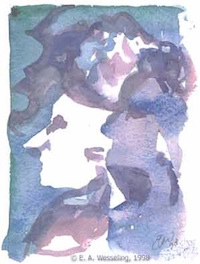

ContactSecretariaatKoor Kaskedieze DirigentJules Bart, 072-5333049. BestuurVoorzitter: Trudy Boom, 075-6212028 |
 |
Links
www.zaankoren.nl |
VerenigingKoor Kaskedieze is ingeschreven als vereniging met volledige rechtsbevoegdheid bij de Kamer van Koophandel te Amsterdam. De statuten zijn ter inzage bij het bestuur. Voor de gewone sterveling is het huishoudelijk reglement geschikter met dezelfde regeltjes in begrijpelijker bewoordingen. Het jaarverslag over 2016 treft u hier aan. |
|
Koor Kaskedieze ontvangt ook in 2017 weer een subsidie voor amateurkunst van de gemeente: |
|